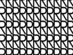

This image was generated with the following program:
from direct.directbase.DirectStart import *
from pandac.PandaModules import *
cm = CardMaker('cm')
cm.setFrame(base.a2dLeft, base.a2dRight, base.a2dBottom, base.a2dTop)
cm.setUvRange(Point2(base.a2dLeft, base.a2dBottom),
Point2(base.a2dRight, base.a2dTop))
card = aspect2d.attachNewNode(cm.generate())
tex = loader.loadTexture('black_r.png')
tex.setMinfilter(Texture.FTLinearMipmapLinear)
card.setTexture(tex)
card.setTexScale(TextureStage.getDefault(), 4, 2)
card.setTexOffset(TextureStage.getDefault(), 0.5, 0.5)
tex.setWrapU(Texture.WMClamp)
tex.setWrapV(Texture.WMClamp)
base.graphicsEngine.renderFrame()
base.screenshot('texture_clamp.png', defaultFilename = 0)
tex.setWrapU(Texture.WMRepeat)
tex.setWrapV(Texture.WMRepeat)
base.graphicsEngine.renderFrame()
base.screenshot('texture_repeat.png', defaultFilename = 0)
tex.setWrapU(Texture.WMMirror)
tex.setWrapV(Texture.WMMirror)
base.graphicsEngine.renderFrame()
base.screenshot('texture_mirror.png', defaultFilename = 0)
tex.setWrapU(Texture.WMMirrorOnce)
tex.setWrapV(Texture.WMMirrorOnce)
tex.setBorderColor(VBase4(0.4, 0.5, 1, 1))
base.graphicsEngine.renderFrame()
base.screenshot('texture_mirror_once.png', defaultFilename = 0)
tex.setWrapU(Texture.WMBorderColor)
tex.setWrapV(Texture.WMBorderColor)
tex.setBorderColor(VBase4(0.4, 0.5, 1, 1))
base.graphicsEngine.renderFrame()
base.screenshot('texture_border_color_blue.png', defaultFilename = 0)
tex.setWrapU(Texture.WMBorderColor)
tex.setWrapV(Texture.WMBorderColor)
tex.setBorderColor(VBase4(1, 1, 1, 1))
base.graphicsEngine.renderFrame()
base.screenshot('texture_border_color_white.png', defaultFilename = 0)
tex.setWrapU(Texture.WMRepeat)
tex.setWrapV(Texture.WMClamp)
tex.setBorderColor(VBase4(1, 1, 1, 1))
base.graphicsEngine.renderFrame()
base.screenshot('texture_clamp_repeat.png', defaultFilename = 0)
|
Click on a date/time to view the file as it appeared at that time.
| Date/Time | Thumbnail | Dimensions | User | Comment |
|---|
| current | 09:27, 11 October 2005 |  | 267 × 200 (12 KB) | Drwr (Talk | contribs) | |
{kind=link}
{kind=link}
{kind=link}
{kind=link}
{kind=link}
{kind=link}
{kind=link}
{kind=link}
{kind=link}
{kind=link}
{kind=link}